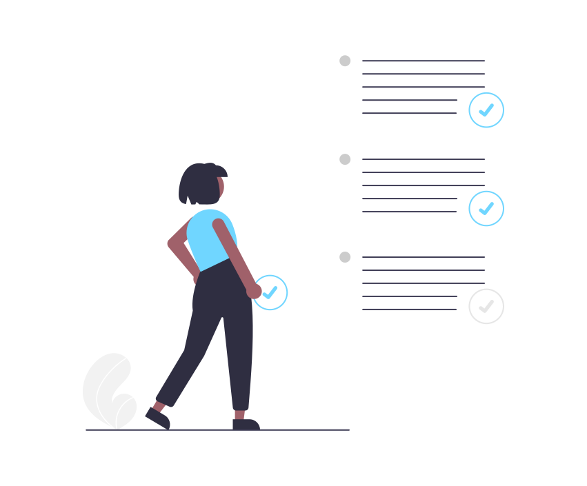

Vous trouverez les réponses aux questions fréquentes (FAQ)

Pour figurer dans la liste des professionnels, vous devez vous inscrire, votre profil sera étudié par l'équipe de SOUTRAMOI, après étude il sera affiché sur la plateforme.
Cherchez votre professionnel en fonction de vos besoins, dans la barre de recherche. Ensuite sélectionnez le profil de celui qui correspond à vos attentes puis contactez-le directement à partir du formulaire disponible dans son profil.
Si vous souhaitez déposer une réclamation, contactez-nous par email ou par téléphone, nous serons heureux de vous aider.
Si vous n'êtes pas en mesure de communiquer avec un professionnel, n'hésitez pas à communiquer avec nous.
Les étoiles sur chaque profil représentent, le niveau de fiabilité et de compétence d'un professionnel et sont accordées par les clients.